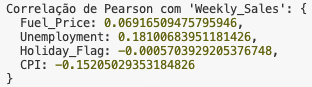

Seminário - Aprendizagem de Máquina
Fatec Mauá
Desenvolvimento de Software Multiplataforma
2° Semestre de 2024
Professor
Dr. Bruno Zolotareff dos Santos
Componentes
André Rosa
Junior Araujo da Silva
Tema
Técnicas de aprendizagem automática supervisionada para previsão de vendas
Artigo Original
Predicting Car Sales with Machine Learning: A Comparative Study
Previsão de vendas de carros com aprendizado de máquina: um estudo comparativo
Resumo
O estudo analisa métodos de previsão de vendas no varejo, comparando algoritmos de aprendizado supervisionado, como Regressão Linear Múltipla, Random Forest e SVM. Usando dados de 45 lojas da Walmart, considera variáveis como histórico de vendas, feriados e preço de combustível, visando ajudar empresários a melhorar estratégias de marketing e promoção.
Metodologia
O estudo analisa métodos de previsão de vendas no varejo, comparando algoritmos de aprendizado supervisionado, como Regressão Linear Múltipla, Random Forest e SVM. Usando dados de 45 lojas da Walmart, considera variáveis como histórico de vendas, feriados e preço de combustível, visando ajudar empresários a melhorar estratégias de marketing e promoção.
A. Conjunto de Dados
Os dados de vendas considerados para o modelo de previsão foram foram retirados de 45 lojas da Walmart. Os dados históricos de previsão abrangem as vendas de 5 de fevereiro de 2010 a 1 de novembro de 2012 [25]. Existem 3 ficheiros de dados separados correspondentes a cada ano e a exatidão dos modelos foi foi calculada em conformidade. O conjunto de dados considerado para o estudo contém os seguintes campos:
- Loja - o número de lojas, uma vez que são consideradas 45 lojas consideradas.
- Data - Considerámos a data como a primeira data da semana de vendas para a previsão de séries cronológicas.
- Vendas semanais - vendas semanais para uma determinada loja.
- Sinal de feriado - para determinar se a semana é uma semana de feriado. Mostra 1 para semana de feriados e 0 para semana sem feriados. Isto ajudará a compreender as tendências durante os feriados.
- Temperatura - Temperatura registada no dia da venda.
- Preço do combustível - Custo do combustível na região onde a loja está localizada.
- IPC - Índice de preços ao consumidor dominante.
- Desemprego - Taxa de desemprego dominante na região onde a loja está presente.
B. Passos para o experimento
- O primeiro passo é importar as bibliotecas necessárias que necessárias que serão utilizadas para construir o modelo, tais como numpy, pandas, matplotlib, seaborn.
- Depois disso, carregámos o conjunto de dados para cada ano de 2010, 2011 e 2012, respetivamente, para o IDE.
- Depois de os dados terem sido carregados, preparou-os para a experiência, convertendo a data para o formato datetime.
- Verificar se existem valores em falta ou nulos.
- De seguida, dividimos a coluna da data e criámos 3 colunas nomeadamente dia, mês e ano.
- Para construir o modelo de previsão, encontrámos os valores anómalos nos dados, traçando a temperatura, o preço do combustível, o IPC e o Desemprego no eixo X.
- O passo seguinte foi eliminar os valores anómalos e considerar o intervalo em que os valores anómalos não se enquadram.
- Em seguida, verificou-se novamente se o gráfico está correto sem os valores anómalos.
- A biblioteca sklearn foi importada para construir o modelo e selecionou caraterísticas e objectivos para os eixos X e Y para prever as vendas.
- Dividiu os dados em conjuntos de treino e de teste na proporção de 80:20.
- Utilizou a regressão linear, o regressor Random Forest, KNN Regressor, SVR, Extra Tree Regressor para prever as vendas da loja Walmart no eixo Y para efetuar uma análise comparativa análise comparativa do modelo de previsão.
- Calculou os erros no modelo de previsão calculando o erro absoluto médio, o erro quadrático médio e a raiz do erro quadrático médio.
Nosso Trabalho
Metodologia
Usamos o modelo de Markov e o coeficiente de correlação de Pearson
A. Conjunto de Dados
Usamos os mesmos dados usados no artigo original
B. Passos para o experimento (Markov)
Markov
C. Passos para o experimento (Pearson)
Pearson
Resultados
Acurácia
| Extra Tree | Markov | |
|---|---|---|
| Acurácia | 98,48% | 99,92% |
Pearson
Conclusão
Metodologia
Usamos o modelo de Markov e o coeficiente de correlação de Pearson
A. Conjunto de Dados
Usamos os mesmos dados usados no artigo original
B. Passos para o experimento (Markov)
Markov
C. Passos para o experimento (Pearson)
Pearson